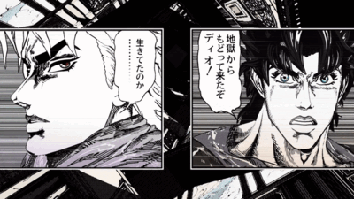

SONO CHI NO SADAME
Music at the height of his work
Sono chi no sadame (directly translated from “The destiny of this blood”) is the first music of part 1 of jojo's bizarre adventure (spoken in the article “book”). Composed by Kohei Tanaka and written by Shoko Fujibayashi, these two artists are already known to have created extremely famous anime music like “We Are! for One Piece.
The music video is quite contrary to the “openings code”. generally the scenes presented during the opening music are 2D drawings of the series watched. Hirohiko Araki decided otherwise and preferred to put 3D models of the protagonists of his manga there and it is this choice that makes his music speak to the world.
GIF from the ending of the opening
Quelques descriptions du clip
The clip begins with a montage of manga scenes highlighting the six protagonists of JoJo from part 6 to 1 (Jolyne, Giorno, Josuke, Jotaro, Joseph and Jonathan), each animated board showing at least two of their most memorable moments. When Jonathan appears as part one's protagonist, he pops out of his panel, before slamming the camera into a punch, making the title appear.

GIF from the ending of the opening